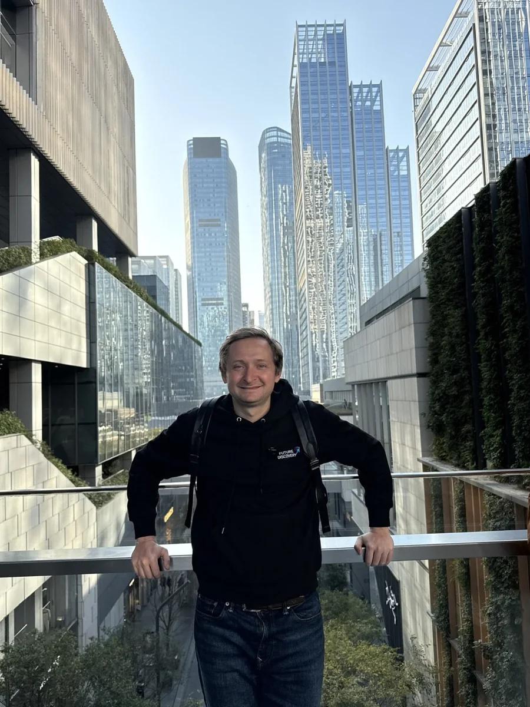
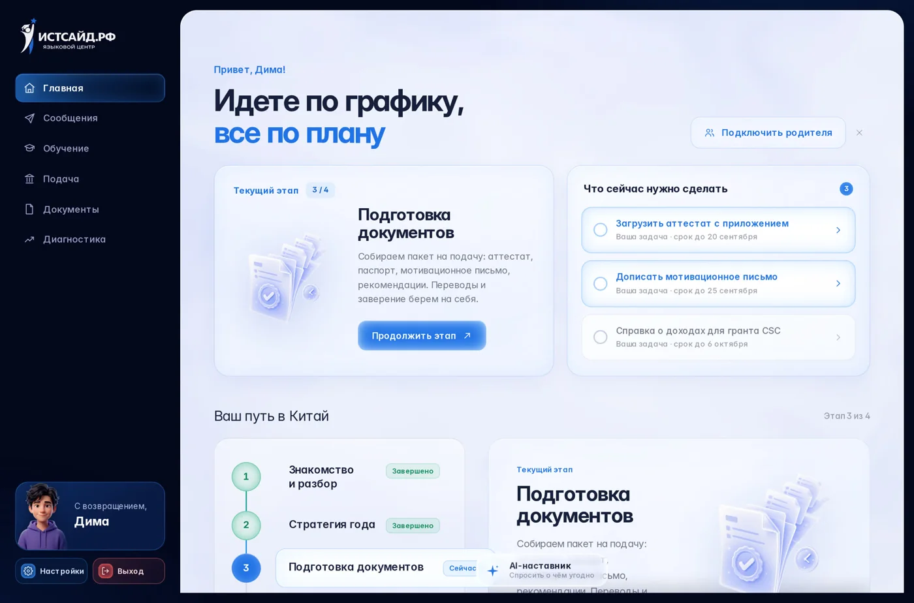
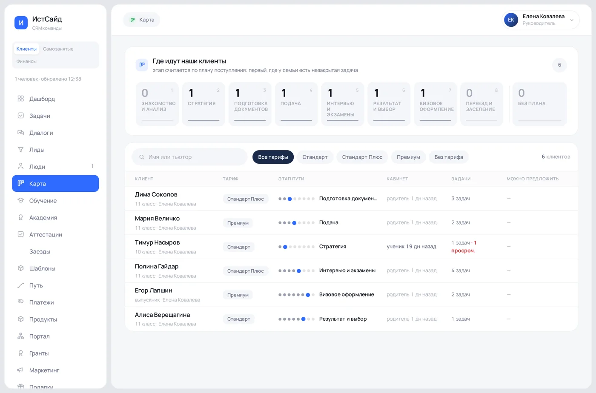
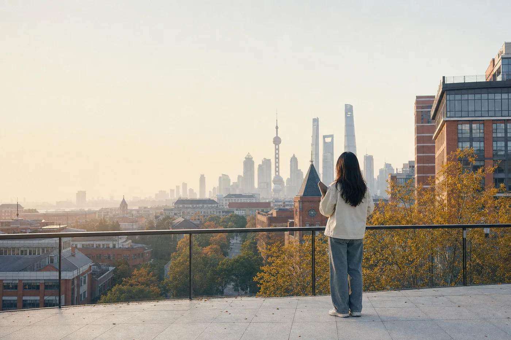

Кто мы, с чего начинали и почему семьи выбирают нас.
Что продаем, за сколько и что ученик проходит с нами.
Как устроен отдел, какие стандарты и из чего складывается ваш месяц.
Основатель компании Виталий учил людей языку и видел, что за языком у них стоит другая цель: уехать учиться.
Сначала помогал поступать тем, кто занимался у него. Потом это стало отдельным делом и выросло в компанию.

Мы пришли в поступление со стороны обучения, а не со стороны документов
Сначала доводим ребенка до уровня, с которым дают грант, и только потом подаем.
Общаемся с приемными комиссиями и знаем требования этого сезона, а не советы из интернета.
У семьи личный кабинет: путь по этапам, документы, тренажеры, связь с командой.
Тьютор, администратор по грантам, специалист по документам. У семьи общий чат.
Снимки настоящие, данные на них учебные.


Три разговора, которые вы будете вести чаще всего. Слова у них разные, страх один: упустить время.
Родитель считает шансы на бюджет и видит, что баллов не хватает. Решение принимается за недели, первая волна в Китае закрывается зимой.
Самые спокойные разговоры и самые длинные отношения: есть время на язык, на профиль, на проект. Такая семья за годы берет у нас не один продукт.
Студент или выпускник, которому нужен диплом посильнее и другая страна. Решает сам, родитель чаще просто платит.
Говорить надо с обоими. Ребенок молчит на встрече, а вечером говорит «я не хочу» — и решения нет.
«А если он не поступит, деньги вернутся?» · «Кто там будет рядом, если что-то случится?» · «А это точно не развод?»
«Он же совсем язык не знает, за год реально?» · «Почему Китай, а не тут отучиться?»
Это настоящие вопросы с наших встреч, а не придуманные. Услышали такой — отвечайте прямо, без обхода.
Поступить можно и самому. Вопрос в цене попытки
Чаще всего семья платит не деньгами, а потерянным годом.
Под профиль ребенка собираем два уровня: куда проходит сейчас и куда успеваем подготовить. Плюс дорожная карта с датами.
С семьи сканы, с нас перевод, нотариус и формат приемной комиссии. Заявки отклоняют за неправильную бумагу, а не за слабого студента.
Мотивационное и рекомендательные пишем мы. Китай ищет тех, кто станет мостом между странами, и письмо показывает ребенка именно так.
Ученик собирает реальный кейс, связанный с Китаем. Заявок с одними документами тысячи, гранты идут тем, кто выделяется.
Вы продаете вероятность пройти цикл один раз, а не изучать систему на своих ошибках два года

Семья приходит за поступлением. Уезжает ребенок с другой жизнью
Через год после разговора, который проведете вы, школьник из обычного города живет в Китае и учится на гранте.
Настоящие семьи, отзывы лежат в открытом канале. Ссылку отправляем прямо в переписку.
Формулировки менять нельзя: это обязательство компании, а не фигура речи.
Говорим «повышаем вероятность сильного гранта». Никогда «гарантируем грант»
И не называем неподтвержденные даты набора: нет точных, говорим «ориентировочно» и идем уточнять.
Основной продукт и основные деньги отдела.
Бесплатный тренажер и поездка на две недели ведут к одному разговору: про грант
Поэтому в CRM важен каждый, кто зашел даже за бесплатным тестом.
Тариф не продается шансами. Шанс одинаковый: работает одна команда
Отличается объем работы, который остается семье. На диагностике показываем сначала Премиум, потом вниз.
Семья получает кабинет.
Семья платит не за подачу бумаг, а за год работы команды рядом с ребенком
Почти все продукты здесь это входы: человек знакомится с нами и попадает в CRM.
Платой за вход служит контакт, и это честно написано в форме. Пробным периодом это не называем.
Входной тест, кабинет тренажера, «Нексис» или пробный урок. Контакт в CRM, разговор начался.
Курс, интенсив под экзамен, две недели на базе вуза. Семья проверяет нас на небольшой сумме.
Тариф с сопровождением: здесь основной чек и основной процент менеджера.
Тьютор в городе, адаптация, потом магистратура или младший ребенок в семье.
Одна такая семья принесла больше миллиона за два года. Поэтому пришедшего за бесплатным тестом ведут так же, как пришедшего за Премиумом.
Главный показатель отдела это количество проведенных консультаций
Он влияет на план сильнее конверсии: разговор, который не состоялся, не вытянуть ни скриптом, ни скидкой.
Медиана первого ответа до 15 минут, ни одного пропущенного обращения, доведение до диагностики.
В карточке стоит: кто ребенок, чего хочет семья, кто принимает решение, история касаний, дата встречи. Здесь чаще всего и теряются лиды.
Открытие от результата платформы, разбор метрик, блок родителя, диагноз, решение, цена, возражения, следующий шаг с датой. С записью.
Договор и оплата. Дальше семью ведет тьютор, администратор по грантам и общий чат.
Медиана первого ответа внутри смены. Первый ответ решает больше, чем красота текста.
Не в чате и не на лендинге. Названная до разбора, она сравнивается с воздухом.
Диагностика без записи не считается проведенной и не оплачивается.
Звонка, которого нет в системе, не было. Итог разговора пишем словами человека.
С семьями работаем с рабочего телефона: это работа компании, а не ваша личная договоренность.
Не обещаем грант, не рисуем портфолио, не называем неподтвержденные даты набора.
Смены, диагностики и проценты за прошлый месяц считаются автоматически.
Видите свой расчет и можете оспорить любую строку.
Рассрочка у семьи: ваш процент идет частями вслед за ее платежами.
Вы ведете семью не один разговор, а годами: созвон раз в несколько месяцев, отметки об этапах, сообщение в день зачисления.
Из небольшого города на международный уровень. Вы помните каждого своего, потому что вели его с первого сообщения в чате.
Не «спасибо за консультацию», а сообщения через год из Китая. Это то, чего не бывает в продажах абонементов и окон.
Старший в отделе, тьюторство, свои проекты во внутреннем инкубаторе. Компания технологичная: то, что вы придумали, можно собрать и запустить.
Человек, с которым вы будете работать каждый день.
Без опыта в поступлении, как и вы сейчас.
Серьезно. Команда разобрала ошибку и оставила работать.
Брала больше, чем требовала должность, и объездила полмира по нашим направлениям.
Сегодня соучредитель и ведет направления целиком.
Раздел «Академия», курс «Продажи»: скрипты, разборы, проверочные вопросы.
Компания, продукт, гранты, кейсы с именами, смены, звонок, диагностика, возражения, деньги, документы.
Тарифы, гранты, сроки волн, что можно и чего нельзя обещать.
Учебная диагностика под запись, пробная консультация с семьей при старшем, конспект живой встречи и письменный ответ на «дорого». Плюс задания внутри уроков: три пробных звонка и две живые диагностики слушателем.
Логин и пароль выдает Павел лично.
Проходим целиком: вопросы аттестации собраны из уроков.
Учебная диагностика с руководителем, с записью.
Первая линия и первые диагностики под присмотром.